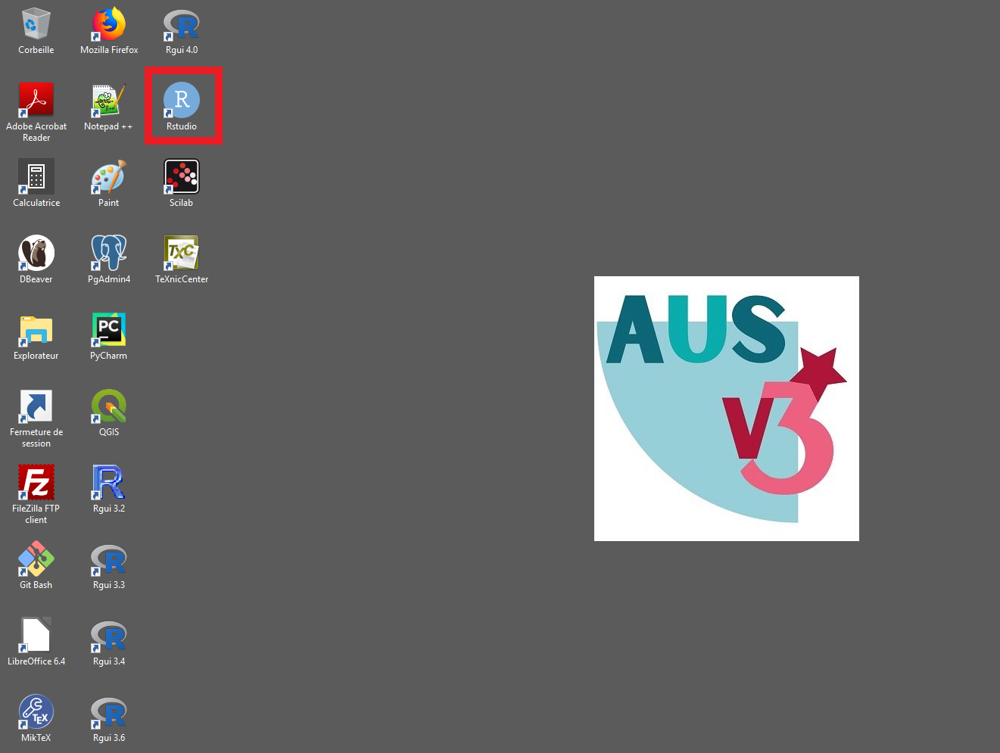
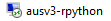

31 Utiliser RStudio sur l’environnement AUSv3
La collection RPython d’AUSv3 est l’environnement de référence pour réaliser des tâches de production statistique et des études avec R et RStudio. C’est notamment sur cette collection qu’il est possible de traiter des données confidentielles avec R et RStudio.
R et RStudio sont également disponibles sur deux autres collections d’AUSv3 :
- la collection Formation (accessible uniquement dans le cadre de formations dispensées à l’Insee) ;
- la collection Lab réservée à des usages expérimentaux ou nécessitant des ressources importantes.
Par ailleurs, si vos traitements nécessitent un accès à internet ou des outils non encore disponibles sur AUSv3, il est préférable d’utiliser le SSP Cloud.
31.1 Présentation succincte d’AUSv3
Les serveurs AUSv3 sont des environnements informatiques de travail sur lesquels les agents de l’Insee peuvent traiter des données confidentielles de façon sécurisée. Les serveurs AUSv3 sont regroupés en cinq groupes de serveurs appelés collections : la collection SAS, la collection WPS, la collection RPython, la collection Formation et la collection Lab.
Une collection AUSv3 est un regroupement de serveurs tous strictement identiques entre eux : les ressources informatiques, la configuration et les logiciels disponibles sont exactement les mêmes sur les différents serveurs d’une collection. En revanche, les collections sont différentes entre elles. Par exemple, tous les serveurs de la collection RPython disposent R, RStudio et Python (mais pas de SAS), et tous les serveurs de la collection SAS disposent de SAS (mais pas de RStudio ni de Python).
Les serveurs AUSv3 font l’objet d’une documentation fournie. Cette documentation se trouve principalement sur l’intranet Insee. Vous pouvez y accéder par l’intranet, puis en cliquant sur Services > DSI > Libre Service statistique > AUS V3.
Des fiches et des tutoriels sont également disponibles dans AUSv3, dans le lecteur Commun.
Le document de référence sur l’utilisation d’AUSv3 est le guide de l’utilisateur d’AUSv3 disponible depuis l’intranet.
31.3 Utiliser RStudio dans AUSv3
31.3.1 Ouvrir RStudio
Pour ouvrir RStudio dans AUSv3, il suffit de double-cliquer sur l’icône RStudio présente sur le bureau d’AUS (encadrée en rouge sur l’image ci-dessous).

D’une manière générale, R et RStudio s’utilisent sur AUSv3 de la même manière que sur un ordinateur personnel. Il existe toutefois certaines particularités liées aux droits d’accès des utilisateurs à certains dossiers :
- dans AUSv3, les utilisateurs ont accès au CRAN via un proxy ;
- l’absence d’accès à Internet rend impossible l’installation directe de packages hébergés sur des forges logicielles extérieures à l’Insee (par exemple, la fonction
remotes::install_github()ne fonctionne pas) ; - les packages installés par un utilisateur sont stockés par défaut sur son espace personnel, dans le dossier
(ESPERT)/R/win-library; il est toutefois possible de changer ce répertoire par défaut avec la fonction.libPaths(); - les fichiers de configuration
.Rprofileet.Renvironsont recherchés par défaut au démarrage dans le dossier(ESPERT)/R.
Pour plus de détails concernant ces points, consulter les fiches Utiliser des packages R et Personnaliser la configuration de R.
Il est possible de demander la mise à disposition dans AUSv3 de packages non disponibles sur le CRAN. Pour ce faire, il faut déposer une demande métier sur Siamoi.
Les ressources informatiques des serveurs AUSv3 (mémoire vive et processeurs) sont partagées entre les applications et les utilisateurs. Il est donc essentiel de veiller à faire un bon usage de ces ressources, de façon à ne pas gêner le travail des autres applications ou utilisateurs. Il est conseillé de lire la fiche Superviser sa session R pour apprendre à superviser votre usage de R.
31.3.2 Travailler avec Git sur AUSv3
31.3.2.1 Créer une clé SSH ou un token https
Pour mettre en place une clé SSH ou un token https sur AUSv3, vous pouvez vous reporter aux ressources suivantes :
- la fiche Configurer
Gitsur son poste de travail ; - la fiche consacrée à ce sujet dans la documentation d’AUSv3 ;
- la partie sur les bonnes pratiques dans le guide de l’utilisateur d’AUSv3.
31.3.2.2 Où stocker les dépôts locaux
Lorsque vous créez un projet RStudio en clonant un dépôt distant, il est nécessaire de définir l’emplacement de votre dépôt local (voir la fiche Travailler avec Git). Dans AUSv3, il est conseillé de stocker vos dépôts locaux dans votre espace personnel (lecteur ESPERT). Par exemple, vous pouvez stocker tous vos dépôts dans un dossier DepotsGit du lecteur ESPERT. En revanche, il est déconseillé de stocker un dépôt local dans un coffre ou dans un espace partagé, car d’autres agents peuvent avoir accès à votre dépôt local.
31.4 Pour en savoir plus
- La foire aux questions d’AUSv3 est disponible sur Agora : [agora.insee.fr], puis cliquer sur
Services > DSI > Libre Service statistique > AUS V3; - La documentation d’AUSv3 est disponible dans le dossier
Y:/Documentation/AUSv3; - le guide de l’utilisateur d’AUSv3 disponible sur l’intranet.
31.2 Comment se connecter à AUSv3
31.2.1 Obtenir un accès à AUSv3
Pour obtenir un accès à AUSv3, vous devez déposer une demande sur l’outil
Siamoi. Voici la procédure :Siamoidisponible sur le bureau de votre poste local ;Vous devriez recevoir des emails vous indiquant que votre accès à AUS a été créé. Suite à la création de votre accès à AUS, vous devriez voir apparaître l’icône suivante sur votre bureau :
Si votre accès à AUS n’est pas créé rapidement, vous pouvez ouvrir un ticket
Siamoi.31.2.2 Ouvrir une session sur AUSv3
Pour ouvrir une session sur la collection
RPython, il faut cliquer sur l’icône d’AUSv3puis sur le raccourci
